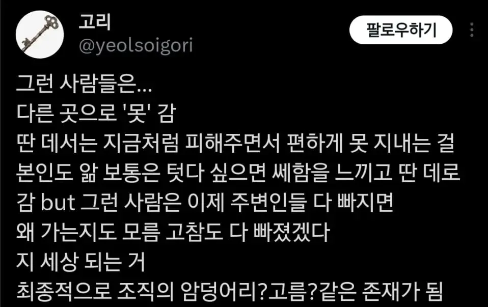

그리고 더 큰 미스테리는 회사에선 저런 인간을 장기근속했다며 신뢰를 주고 높은 직급을 쥐어주고 더 큰 권력을 쥐어줌

그리고 더 큰 미스테리는 회사에선 저런 인간을 장기근속했다며 신뢰를 주고 높은 직급을 쥐어주고 더 큰 권력을 쥐어줌
-공무원-
저거 딱 지금 내가 겪고있는 상황인데
저건 인사가 무능한거지
공공기관인 경우 승진하면 다른부서로 가니까
저런 인간들 고과를 일부러 높게 줘서 딴데 보내려함
본인은 무능한데 그 아래 직원들만 고생하고 실적은 자기가 챙겨가는 놈이 제일 ㅈ같음